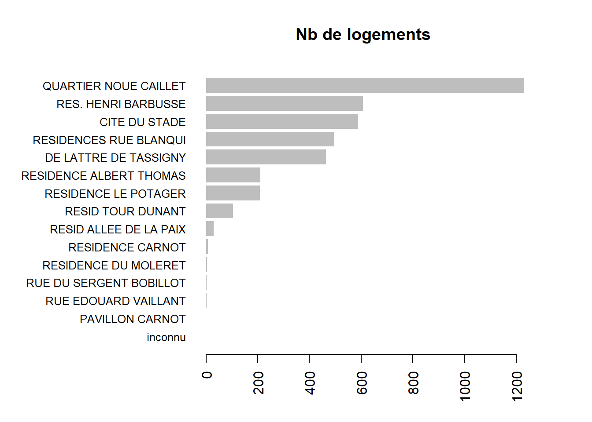
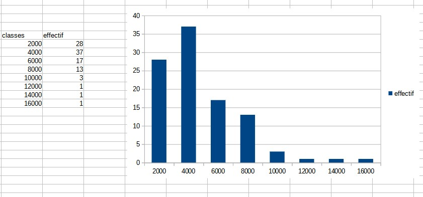

Statistique univariée
BMaranget
20/09/2021
1 Termes
1.1 Trouver des termes pour les objets en statistiques :
exemple : - variable, - observation, - valeur
A vous !
On retiendra pour le moment uniquement les termes : individu / population / variable et modalité
1.2 distinguer tableau complet, tig, tableau condensé
Individu -> Modalité Modalité -> Individus
2 L’essentiel : la forme d’une distribution
2.1 Abscisses et ordonnées

2.2 Tiges et feuilles
discrétisation la plus rudimentaire
2.3 Et sous un tableur
2.3.1 La source
https://www.insee.fr/fr/statistiques/4487988
data <- read.csv("data/2021-09-17_deces_quotidiens_departement_csv.csv", sep =";")
length(data$Zone)## [1] 373322.3.2 Préparation de l’exercice
2.3.2.1 Pour obtenir un TIG avec une seule variable, quelle variable choisir et pour quels individus ?
Réponse : Pour un jour donné, on prend les départements (pas la France), et une colonne de total pour les décès.
head(data)## Date_evenement Zone Communes_a_envoi_dematerialise_Deces2021
## 1 01-janv. France 1940
## 2 02-janv. France 3792
## 3 03-janv. France 5743
## 4 04-janv. France 7714
## 5 05-janv. France 9696
## 6 06-janv. France 11605
## Total_deces_2021 Communes_a_envoi_dematerialise_Deces2020 Total_deces_2020
## 1 2145 1733 1900
## 2 4201 3477 3795
## 3 6351 5250 5744
## 4 8549 6901 7569
## 5 10724 8469 9304
## 6 12840 10223 11279
## Communes_a_envoi_dematerialise_Deces2019 Total_deces_2019
## 1 1663 1816
## 2 3409 3728
## 3 5092 5578
## 4 6822 7456
## 5 8549 9345
## 6 10257 11225choix <- data [data$Date_evenement == '01-janv.'&data$Zone != 'France', c('Zone', 'Total_deces_2020')]
write.csv(choix, "data/choix.csv")
knitr::kable(head(choix))| Zone | Total_deces_2020 | |
|---|---|---|
| 367 | Dept_01 | 9 |
| 733 | Dept_02 | 23 |
| 1099 | Dept_03 | 9 |
| 1465 | Dept_04 | 7 |
| 1831 | Dept_05 | 7 |
| 2197 | Dept_06 | 44 |
Cet exercice permet d’utiliser dans le tableur :
- la suppression de colonne
- l’autofiltre pour sélectionner les données
- les 3 raccourcis clavier : CTRL + * , CTRL + C, CTRL + V
2.3.2.2 Tableau de fréquences sous Libre Office : savoirs faire
- Touche de sélection et de déplacement
- tri
- utilisation de la barre d’adresse
- formule frequence, formule matricielle (CTRL + MAJ + ENTREE)
2.3.3 Quel commentaire ?
- étendue
- forme de la distribution
2.3.3.1 Proposer une première représentation graphique
hist(choix$Total_deces_2020, main = "Total décès 2020", xlab = "classes", ylab = "effectif")
résultat avec un tableur 
3 Pour raffiner : les indicateurs
Nous avons déjà vu l’amplitude à travers minimum et maximum. Il y en a d’autres. Ils servent à résumer la série statistique
3.1 Calcul : valeurs centrales et dispersion
3.1.1 Valeurs centrales
Il s’agit de caractériser une distribution par son centre.
3.1.1.1 Moyenne et médiane
3.1.1.1.1 Calcul
Le calcul de la moyenne est connu. Celui de la médiane beaucoup moins.

Calcul des effectifs cumulés,
puis de la fréquence des effectifs (effectif cumulé / total des effectifs)
Repérer le rang 50 %
savoir faire tableur
valeur fixe et relative (utilisation du $ et MAJ F4)
au niveau graphique, rajout d’un axe par le menu insertion après double clic sur le graphique (onglet positionnement, menu déroulant valeur)
3.1.1.1.2 Que retenir ?
Expliquer ces phrases issues du Chadule
La médiane est dans une distribution la valeur la plus proche de toutes les autres
les valeurs extrêmes décentrent la moyenne
3.1.1.2 La valeur modale
La valeur la plus fréquente
Quelle utilité dans notre série ?
3.1.2 Dispersion : Ecart-type et variance
La distribution est-elle hétérogène ?
2 définitions :
écart moyen des valeurs à leur moyenne arithmétique
moyenne du carré des écarts
Toujours sans passer par les formules, mais avec un tableau pas à pas, créer les indicateurs.
liste des colonnes : - écart à la moyenne - carré des écarts et à part sur une seule case : moyenne du carré des écarts (variance), l’écart type est la racine carrée.
3.1.3 Ecart interquartile
Passer par le tableau des fréquences cumulées
3.2 Appliquer : apréhender quelques indicateurs
Faire un commentaire sur ce qu’indique les indicateurs par rapport à votre série. Consigner ce commentaire dans l’évaluation finale.
L5GEABIM Analyses bivariées et multivariées